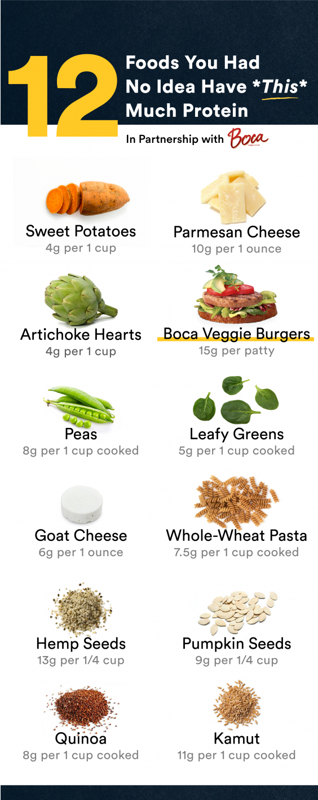
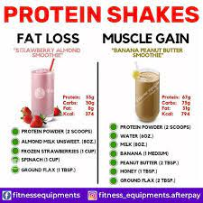
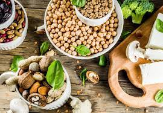

Serial No. |
Image |
Facts |
1 |
 |
Protein is in every cell in the body. Our bodies need protein from the foods we eat to build and maintain bones, muscles and skin. We get proteins in our diet from meat, dairy products, nuts, and certain grains and beans. Proteins from meat and other animal products are complete proteins. This means they supply all of the amino acids the body can't make on its own. Most plant proteins are incomplete. You should eat different types of plant proteins every day to get all of the amino acids your body needs.
|
2 |
 |
It is important to get enough dietary protein. You need to eat protein every day, because your body doesn't store it the way it stores fats or carbohydrates. How much you need depends on your age, sex, health, and level of physical activity. Most Americans eat enough protein in their diet. |
3 |
 |
If you are focused on feeling satisfied after eating a meal, supporting your muscle growth, helping your body have strong bones, and powering your immune health, then protein needs to be a part of your plate. Sure, carbohydrates and healthy fats play important roles when it comes to supporting our overall health and wellness. But protein plays so many key roles in the human body that eating enough should be a priority. |
4 |
 |
Protein is available in many foods. They are from either complete (whole chains) or incomplete (part chains) proteins. You can eat either, and they will combine to form the fullest possible chain. • Protein comes from: eggs, meat, fish, dairy, soy, nuts, legumes, and wild game • Small amounts of protein are available in vegetables as well. Source: Muscle & Strength |